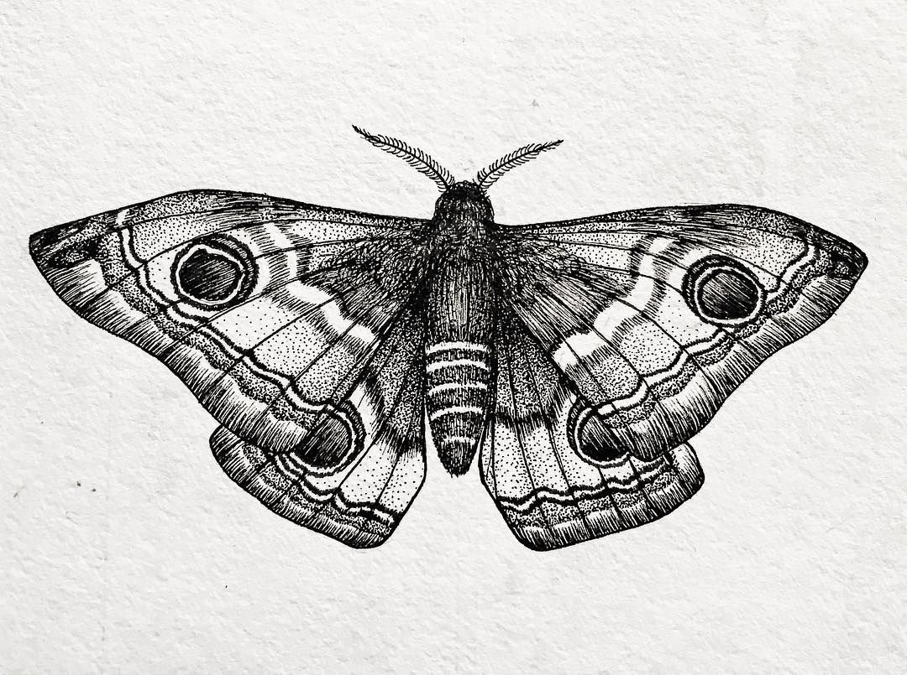
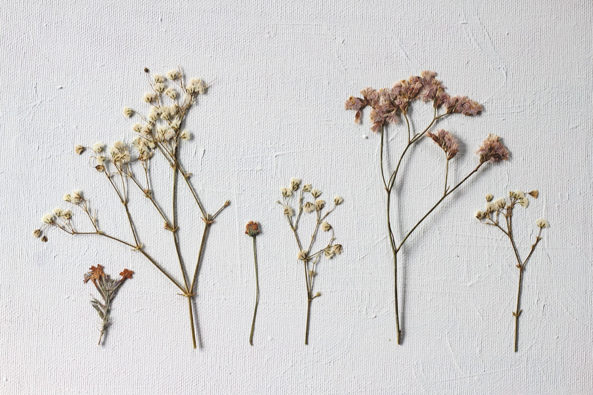

Moths, mushrooms and magnolias galore! Welcome to the Flora and Fauna club where we explore all different types of animals, plants and insects. This club centers around working with non-profit organizations to raise money for environmental sustainability projects and with non-profits working to save endangered species. Aside from this you will also learn about all different types of organisms and where to find them! Environmental sustainability is the core of this club and if you don't value this then we are not the right fit for you; so get out. Next to this text you'll see an image of a Polyphemus Moth, more commonly known as a Cramer. Click on the image and you'll receive more information on it! (click on the left wing then the right) |
 |
|---|
|  | As you can see on the left there is an image of flattened flowers; this was done in a process known as flower pressing. This method is a great way to store your finds for a long time. To learn how to make flower pressings of your own click here! |
|---|